Como hacer un sistema hidroponico
Conceptos
La hidroponía es una técnica de cultivo que permite el crecimiento de plantas sin la necesidad de suelo, utilizando en su lugar soluciones minerales en un medio acuoso. Este método tiene varias ventajas en términos de eficiencia y sostenibilidad. A continuación, se presentan los conceptos básicos para comprender mejor esta innovadora técnica de agricultura. Definición de Hidroponía La hidroponía es un método de cultivo de plantas que utiliza soluciones minerales en lugar de suelo para proporcionar los nutrientes esenciales. Las raíces de las plantas están sumergidas en una solución nutritiva o soportadas por un medio inerte, como arena, grava, perlita, lana de roca, o arcilla expandida.
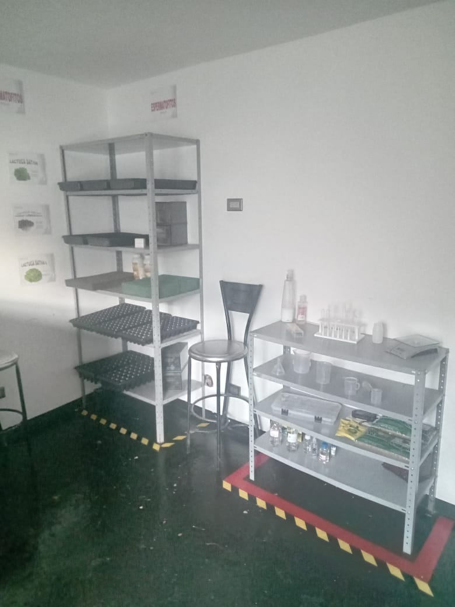 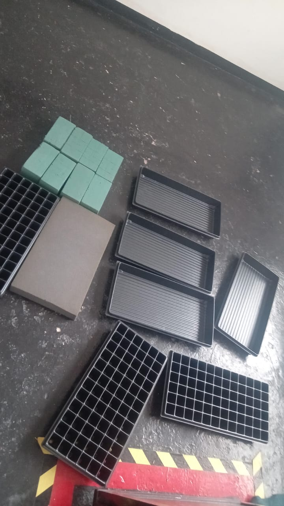Beneficios y Ventajas
La hidroponía ofrece numerosas ventajas sobre la agricultura tradicional, lo que la convierte en una opción cada vez más popular para cultivadores comerciales y aficionados. A continuación, se detallan los principales beneficios y ventajas de esta técnica de cultivo sin suelo. 1. Eficiencia en el Uso del Agua Uso Reducido de Agua: La hidroponía utiliza hasta un 90% menos de agua que la agricultura tradicional. Esto se debe a que el agua se recircula y se reutiliza dentro del sistema, minimizando el desperdicio. Menor Evaporación: En sistemas cerrados, la evaporación del agua es significativamente menor, lo que contribuye a la conservación de este recurso vital.
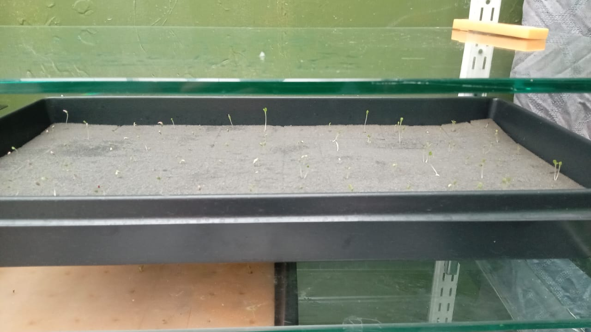 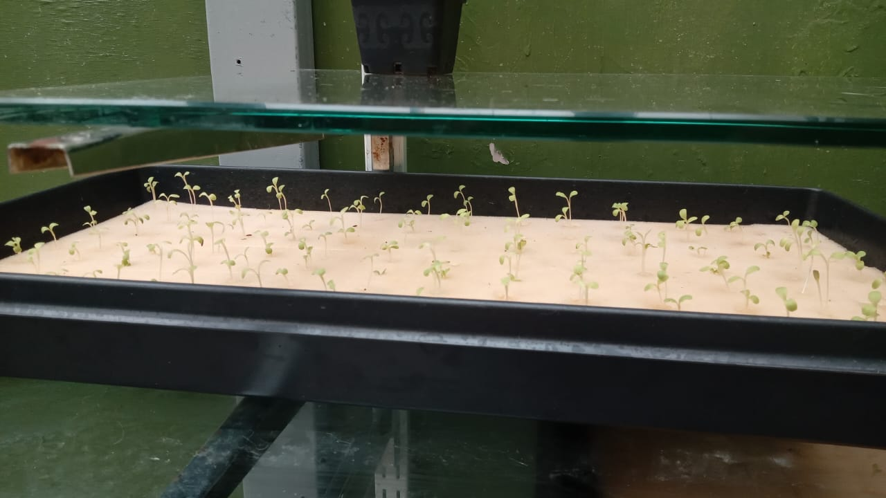Sistema de Mecha
El sistema de mecha es uno de los métodos hidropónicos más simples y accesibles, ideal para principiantes debido a su bajo costo y facilidad de implementación. A continuación, se presentan los conceptos básicos, componentes, funcionamiento, ventajas y desventajas del sistema de mecha. Conceptos Básicos El sistema de mecha utiliza una mecha (generalmente hecha de material absorbente) para transportar la solución nutritiva desde un reservorio hasta las raíces de las plantas. Las plantas se cultivan en un medio de cultivo inerte que sostiene las raíces y ayuda a mantener la humedad.
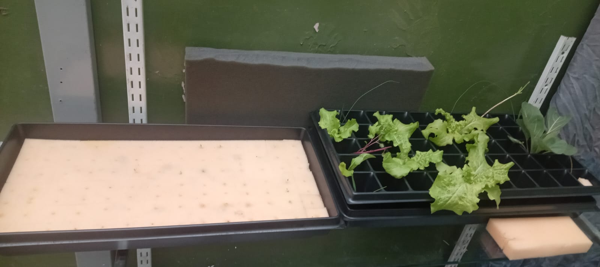 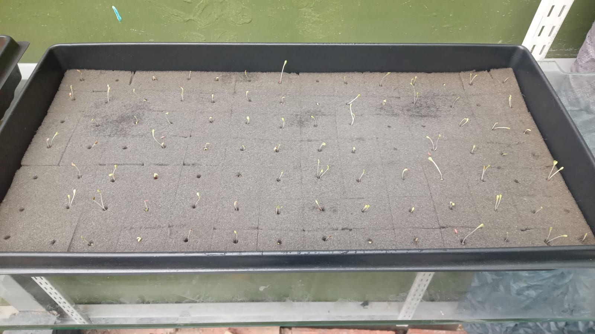Técnica de Película de Nutrientes
La Técnica de Película de Nutrientes (NFT) es uno de los métodos hidropónicos más populares y eficaces, especialmente en entornos comerciales y de investigación. Este sistema se caracteriza por la circulación continua de una fina capa de solución nutritiva a lo largo de las raíces de las plantas, permitiendo un acceso constante a los nutrientes y al oxígeno. A continuación, se detallan los conceptos básicos, componentes, funcionamiento, ventajas y desventajas del sistema NFT. Conceptos Básicos La NFT utiliza un flujo constante y delgado de solución nutritiva que recircula a través de un canal en el que las raíces de las plantas están parcialmente expuestas. Este flujo proporciona los nutrientes esenciales a las raíces, al mismo tiempo que les permite un acceso adecuado al oxígeno.
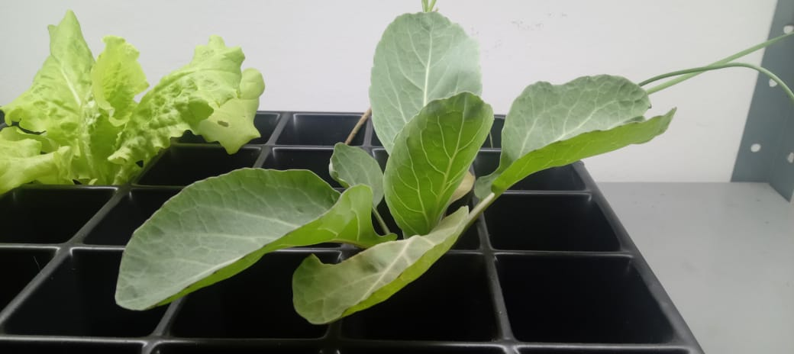 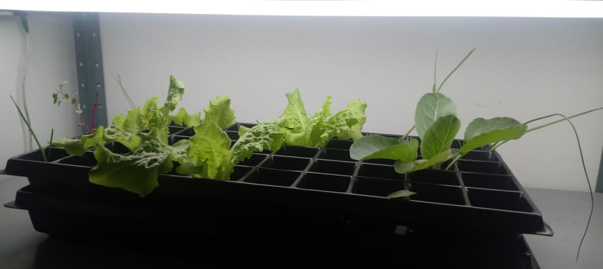Sistema de Flujo y Reflujo
El sistema de flujo y reflujo, también conocido como sistema de inundación y drenaje, es una técnica hidropónica ampliamente utilizada debido a su eficiencia y flexibilidad. Este método implica inundar periódicamente el medio de cultivo con una solución nutritiva y luego drenar el exceso, permitiendo que las raíces de las plantas se oxigenen adecuadamente entre los ciclos. A continuación, se describen los conceptos básicos, componentes, funcionamiento, ventajas y desventajas del sistema de flujo y reflujo. Conceptos Básicos El sistema de flujo y reflujo se basa en la inundación temporal del medio de cultivo con una solución nutritiva, proporcionando nutrientes y agua a las raíces de las plantas. Después de un tiempo preestablecido, la solución se drena de vuelta al reservorio, permitiendo que las raíces se oxigenen antes del siguiente ciclo de inundación.
 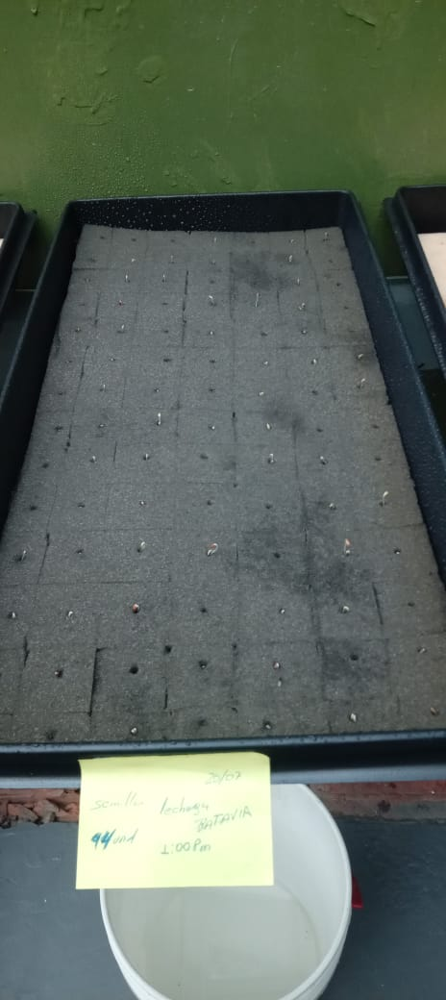
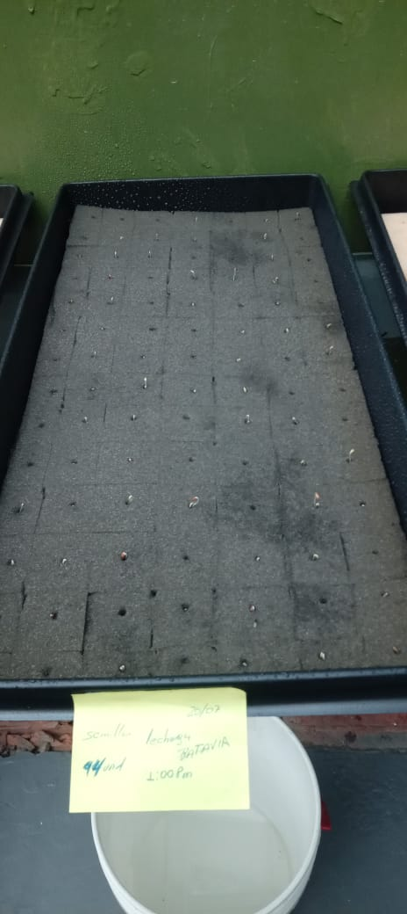
Sistema de Cultivo en Agua Profunda (DWC)
Los procesos hidropónicos representan un avance significativo en la agricultura moderna, permitiendo el cultivo de plantas sin necesidad de suelo. En estos sistemas, las plantas crecen en soluciones nutritivas acuosas que proporcionan todos los elementos esenciales para su desarrollo. El proceso comienza con la disolución de nutrientes en agua, creando una mezcla balanceada que se distribuye directamente a las raíces de las plantas. Este método permite un uso altamente eficiente del agua y facilita un control preciso de los nutrientes y el pH, lo que resulta en un crecimiento más rápido y saludable de las plantas.
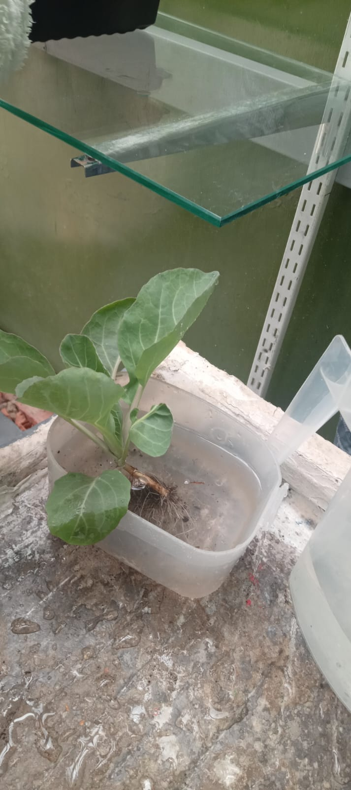 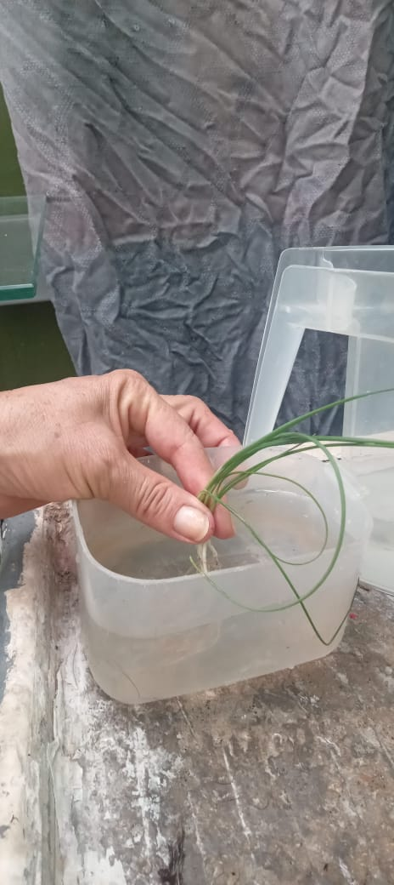Recipientes de Cultivo
Los recipientes de cultivo son componentes fundamentales en los sistemas hidropónicos, ya que proporcionan el soporte necesario para las plantas y sus raíces mientras mantienen la solución nutritiva. Existen diferentes tipos de recipientes de cultivo que se adaptan a las diversas técnicas hidropónicas, y cada uno tiene sus propias ventajas y consideraciones. A continuación, se describen los conceptos básicos, tipos de recipientes, materiales utilizados y consideraciones importantes al seleccionar recipientes de cultivo para sistemas hidropónicos.
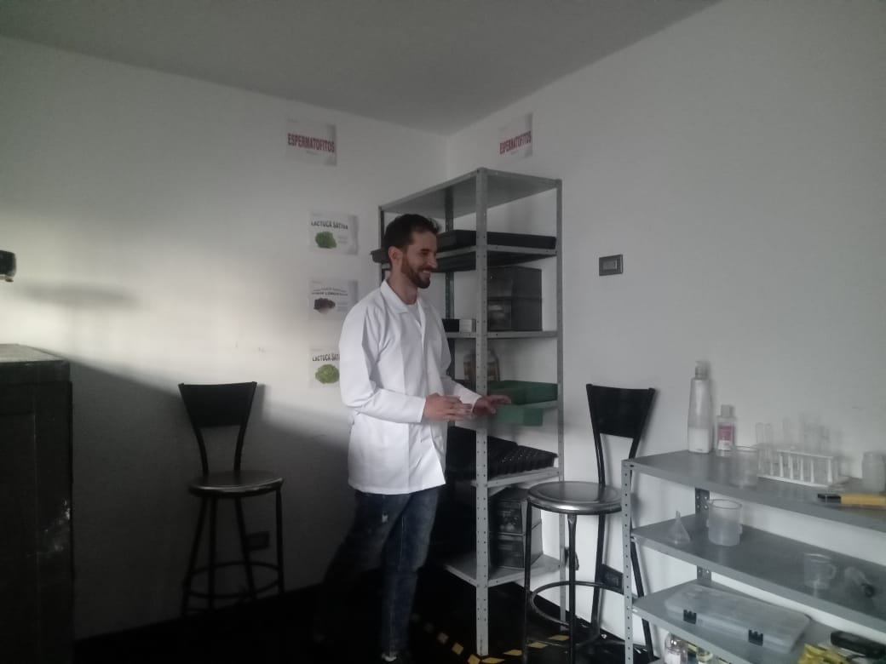Bombas y Sistemas de Riego
Las bombas y los sistemas de riego son componentes críticos en la hidroponía, ya que aseguran que las plantas reciban la cantidad adecuada de agua y nutrientes de manera eficiente y controlada. Estos sistemas varían en complejidad y pueden adaptarse a diferentes tipos de cultivos y configuraciones hidropónicas. A continuación, se describen los conceptos básicos, tipos de bombas y sistemas de riego, así como consideraciones importantes para su selección y mantenimiento.
Sustratos Inertes
Los sustratos inertes son materiales que se utilizan como medio de cultivo en sistemas hidropónicos, proporcionando soporte físico a las plantas mientras permiten el acceso a la solución nutritiva. A diferencia del suelo, los sustratos inertes no aportan nutrientes por sí mismos, pero facilitan la retención de agua y nutrientes, además de mejorar la aireación de las raíces.
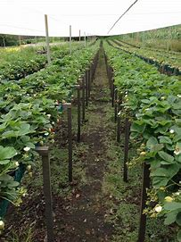 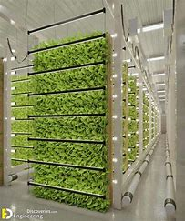Iluminación
La iluminación es uno de los factores más importantes en el cultivo hidropónico, ya que las plantas necesitan luz para realizar la fotosíntesis, un proceso esencial para su crecimiento y desarrollo. En sistemas hidropónicos, especialmente en entornos interiores o en climas donde la luz natural es limitada, es crucial proporcionar una fuente de iluminación adecuada y controlada para asegurar el éxito del cultivo. Conceptos Básicos La luz proporciona la energía necesaria para que las plantas conviertan el dióxido de carbono y el agua en glucosa y oxígeno, un proceso conocido como fotosíntesis. La calidad, cantidad y duración de la luz afectan directamente la salud y el crecimiento de las plantas.
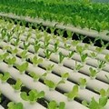Contacto
Para más información sobre nuestros cultivos y tecnologías, contáctanos en info@researckoy.com o al +57 3136481715 Estamos aquí para ayudarte con tus consultas.